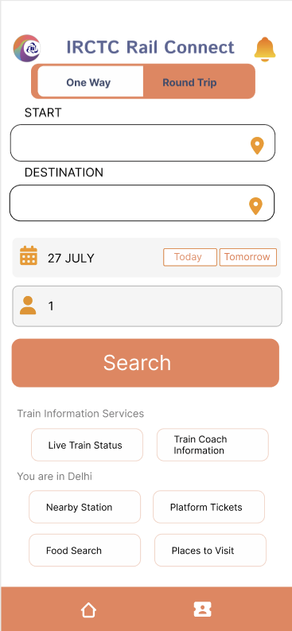
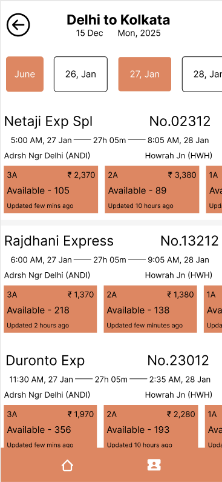

IRCTC App Redesign


The Problem
The existing IRCTC mobile app presents a cumbersome and outdated user experience, particularly in critical areas such as the landing page, home page, and ticket booking process. Users often report difficulty in navigation, lack of transparency in fare details, limited payment options, and a confusing flow when adding travelers. These issues contribute to user frustration, reduced engagement, and increased reliance on third-party booking platforms.
The Goal
The goal of the IRCTC app redesign is to enhance the user experience by simplifying navigation, clarifying booking steps and fare details, and offering greater flexibility in adding travelers and choosing payment options. By improving the landing page, home interface, and ticket booking flow, the app aims to increase user satisfaction and drive more successful bookings through the official platform.
Project Timeline
10/05/2025: Conducted survey through Google forms
15/05/2025: Completed primary and secondary research
21/05/2025: Finalized features and flow
12/12/2025: Completed designing all high-fidelity wireframes
15/12/2025: Finished prototype